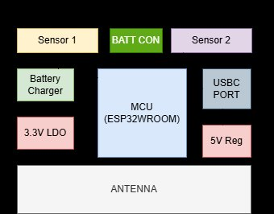
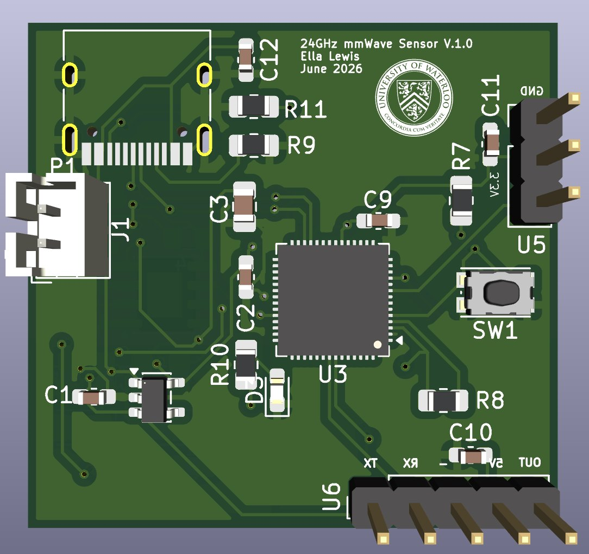
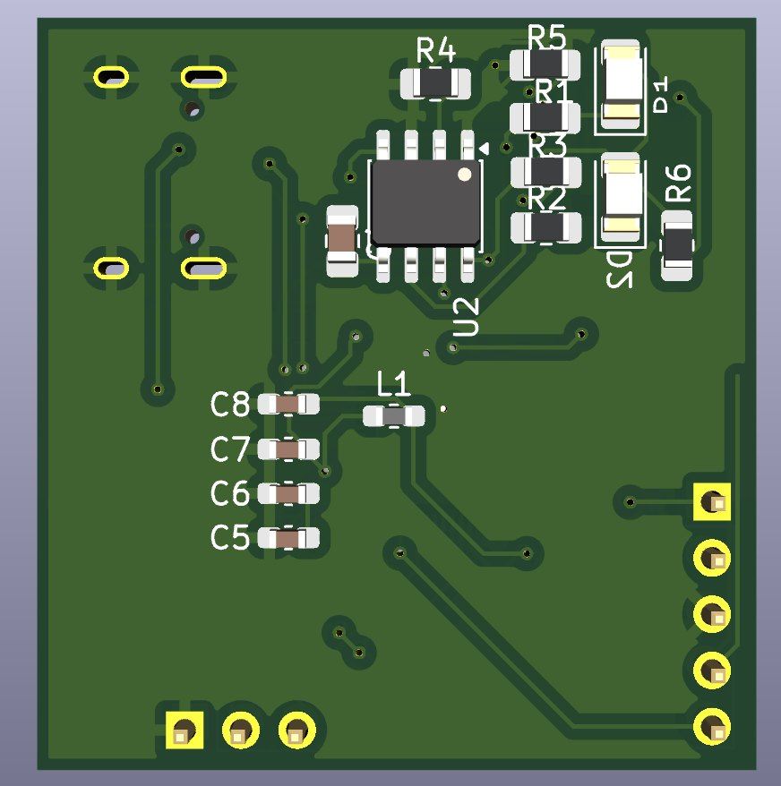
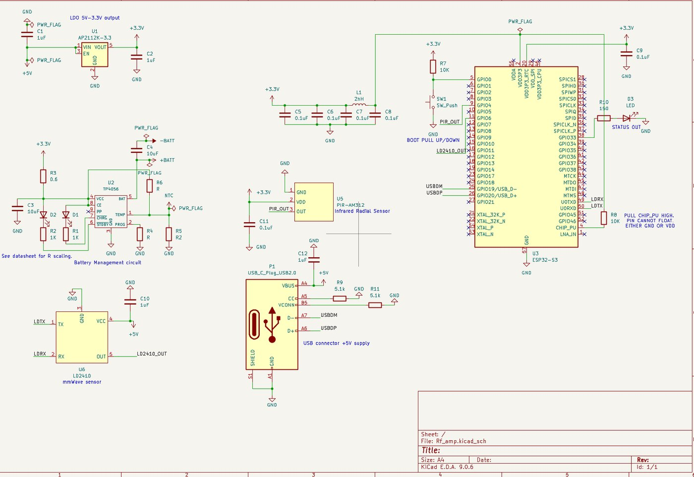
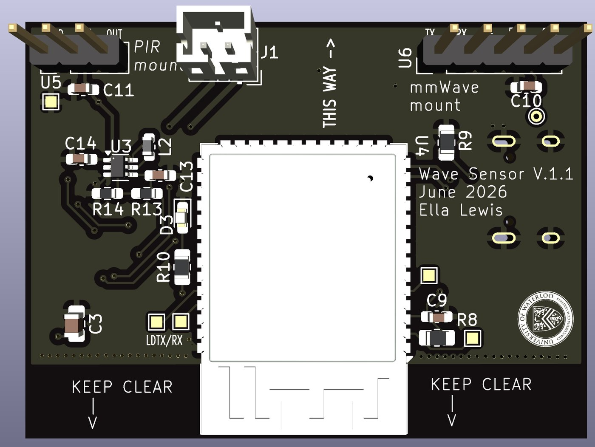
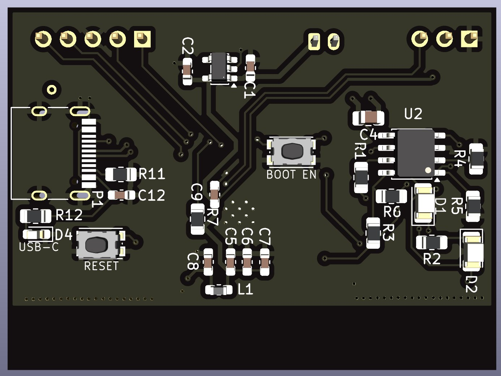
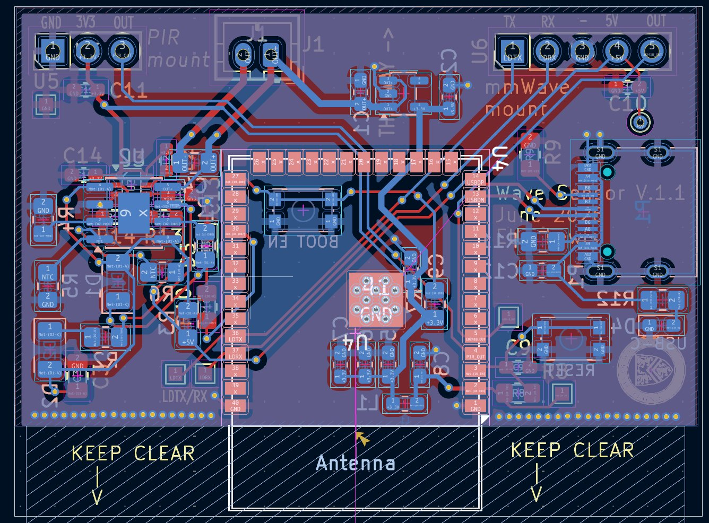

Room Watchdog — mmWave Sensor Module
A battery-powered room occupancy monitor pairing an LD2410 24 GHz mmWave radar with a PIR sensor on an ESP32-S3-WROOM. Detects a walk-in event and notifies over Wi-Fi. Two board revisions, schematic through layout to bring-up.
The brief
Snacks were going missing from a bedroom during the day. The board needed to detect someone walking into the room and push a notification to a phone over Wi-Fi — cheap to build, easy to maintain, and running off a battery so it could go anywhere near the door without a wall socket.
Why two sensors
A PIR sensor detects changes in infrared radiation. It draws almost nothing and suits continuous monitoring, but a person sitting still looks identical to an empty room. The 24 GHz mmWave radar picks up very small motion at much higher sensitivity — at the cost of real current draw.
Running both improves detection reliability and cuts false positives. More usefully, it lets the ESP32 drop into low-power sleep while the PIR keeps watch, and only wake the radar when the PIR sees something. Presence detection without paying the radar's power bill continuously.

Power architecture
The board runs from the Li-ion cell when USB-C is disconnected, and charges the cell whenever USB-C is present — so it keeps operating when external power is pulled. The AP2112 LDO accepts roughly 2.5–6 V in, which comfortably covers the cell's 4.2 V–3.0 V range and generates the 3.3 V rail for the ESP32 and supporting logic.
| Fully charged | 4.2 V |
| Nominal | 3.7 V |
| Discharged | ~3.0 V |
The bug that mattered
Debugging turned up a real design fault: the LD2410 requires a regulated 5 V supply, and the battery never exceeds 4.2 V. The radar simply cannot be powered from the cell as the board is built. Everything else in the power architecture was right, and this one requirement invalidated the headline feature — a battery-powered presence sensor that can't run its presence sensor on the battery.
The working fix is an external 5 V supply during debug. The real fix, queued for the next revision, is an integrated boost converter generating a regulated 5 V rail from the Li-ion cell.
Worth stating plainly rather than quietly fixing in a respin: the failure was in reading the sensor's supply requirement against the battery's actual voltage range before committing the power tree.
Layout
Two layers, given the relative simplicity. The constraints that drove the placement were the ESP32 antenna keep-out, mmWave sensor clearance, PIR clearance, and power integrity across the board. Decoupling sits close to the ESP32 and sensor supply pins, with ground copper pours providing a low-impedance return. The USB differential pair is routed together with closely matched lengths.
| LD2410 5 V supply | 0.2 mm — ~80 mA load |
| VBAT and +5 V rails | 0.5 mm — higher current path |
| USB-C role | Sink — CC pins pulled down to request power |
Both sensors face the same direction, which sounds cosmetic but makes the thing actually mountable.



Revision 1.1 — what changed
Every change below came out of building and using v1.0:
| MCU | Moved to the ESP32-S3-WROOM module with a Wi-Fi antenna connection |
| Sensor orientation | PIR and mmWave mounting ports now face the same direction |
| Power loop | Battery power loop shortened to cut parasitic inductance |
| Silkscreen | Identifiers added for mounting ports and key test points |
| Debug | Test points added on power rails and sensor signal rails |
| Flashing | Physical RESET button alongside BOOT |
| PIR supply | Dedicated regulator for the +5 V PIR VDD |
| Protection | TVS diodes on USB-C D+/D− lines for ESD |



Bring-up & validation
Visual inspection of solder joints, component orientation, sensor mounting direction and connector placement first. Then continuity, input current verification under 100 mA, LDO input/output measurement, and MCU supply verification. USB-C power test confirms the LED lights and all rails come up. Firmware flashing is the standard ESP32 dance — hold BOOT, press and release RESET, release BOOT, flash, reset to run. Functional test confirms the sensors detect occupancy and the notification goes out over Wi-Fi.
Next revision
| Power | Integrated 5 V boost converter — the LD2410 fix |
| Layout | Reduce power loop area |
| Placement | Optimise sensor positioning |
| Firmware | Improve low-power operation |
| Monitoring | Add a battery fuel gauge |
| Mechanical | Design an enclosure |